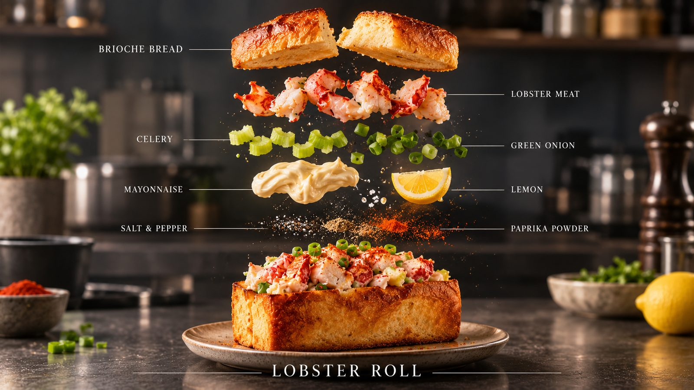

양식 · 20분 · 난이도 하
남는 식빵으로 만드는 랍스터 롤
뉴잉글랜드식 랍스터 롤을 식빵으로. 버터에 구운 따뜻한 빵과 차가운 속의 온도 차이가 핵심인 브런치 한 접시.
- Time
- 20분
- Difficulty
- 하
- Serves
- 2개 분량
- Equipment
- 1구 인덕션
랍스터 롤은 원래 버터에 구운 핫도그 번에 랍스터 샐러드를 채우는 미국 뉴잉글랜드식 샌드위치예요. 전용 번을 구하기 어려워서 남는 식빵을 써서 대신했는데, 오히려 버터가 더 깊게 배어서 만족스러웠어요. 랍스터가 부담스럽다면 냉동 랍스터 테일이나 자숙 새우, 게살로 바꿔도 모양과 맛이 충분히 나요.
Méthode
- 샐러드 버무리기셀러리와 쪽파는 잘게 다지고, 크래미 살과 함께 마요네즈, 레몬즙, 소금·후추로 가볍게 버무려요. 냉장고에서 10분 차갑게 해두면 맛이 어우러져요.
- 빵에 칼집식빵은 윗면 가운데에 칼집을 깊게 넣어 주머니처럼 벌려요. 바닥까지 자르지 않게 주의해요.
- 버터에 굽기팬에 버터를 녹이고 식빵 양 옆면을 노릇하게 구워요.
- 속 채우기따뜻한 빵에 차가운 랍스터 샐러드를 가득 채우고, 쪽파와 파프리카 가루를 뿌려 마무리해요.
Chef's Note — 원룸 팁
빵은 꼭 먹기 직전에 구워야 해요. 따뜻한 버터 빵과 차가운 속의 온도 차이가 이 메뉴의 포인트예요.
셀러리가 없으면 오이로 대신해도 아삭한 식감을 낼 수 있어요.
재료는 단순한데 접시에 올리면 브런치 카페 메뉴 같은 비주얼이 나와요. 주말 늦은 아침이나 손님 접대용 핑거푸드로 추천해요.
